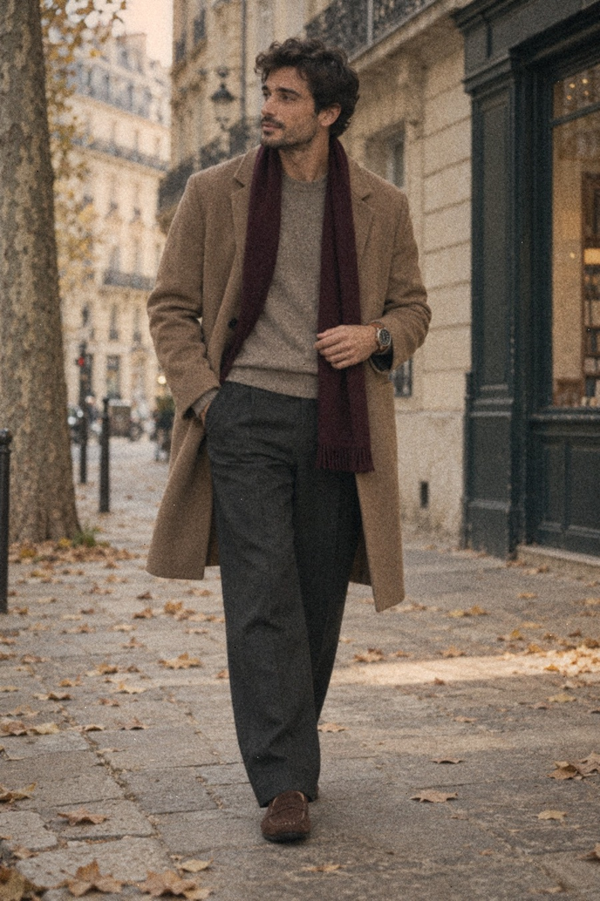
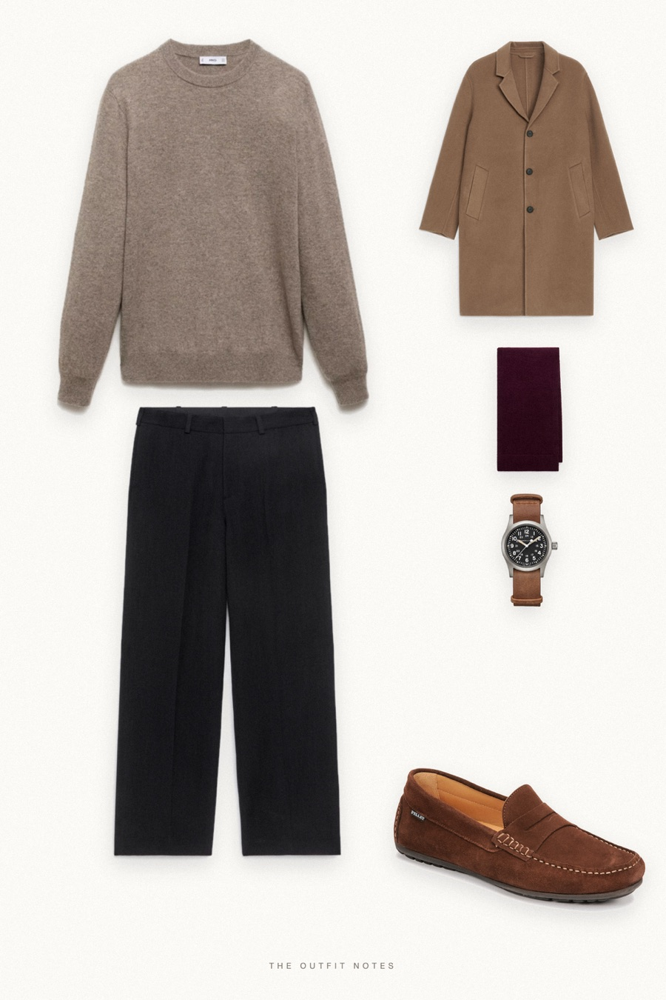

Camel Hour
taupe cashmere under a long camel coat


A quiet luxury fall outfit for men built on warm neutrals. Mango taupe cashmere sweater and ARKET charcoal wool trousers sit under an ARKET camel topcoat, with Pellet cocoa suede loafers, a burgundy wool scarf as the single accent and a Hamilton Khaki Field on brown leather. Old money outfits men can wear daily.
The pieces
This page contains affiliate links: if you buy through them, we may earn a commission at no extra cost to you. Disclosure.
 Mango
Mango
Taupe cashmere sweater
Shop ARKET
ARKET
Charcoal loose wool trousers
Shop Pellet
Pellet
Cocoa suede loafers
Shop ARKET
ARKET
Camel wool topcoat
Shop ARKET
ARKET
Burgundy wool scarf
Shop Hamilton
Hamilton
Khaki field watch
Shop
Prices are indicative, taken when the look was published, and may have changed. Pictures of the outfit are AI-generated illustrations of real products; the product photos are the retailers' own.
Published 1 October 2026.